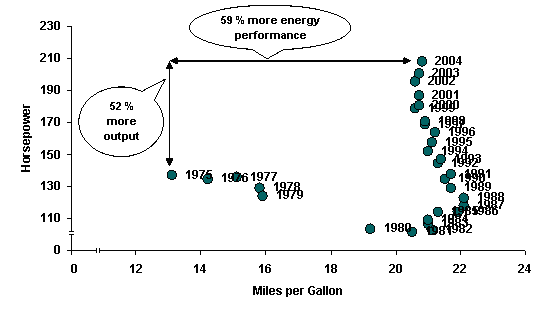

This report, Household Vehicles Energy Use: Latest Data & Trends, provides details on the nation's energy use for household passenger travel. A primary purpose of this report is to release the latest consumer-based data on household vehicles and expenditures, derived from the U.S. Department of Transportation's 2001 National Household Travel Survey (NHTS) and independent estimates of vehicle miles per gallon and fuel prices at that time (see Figure ES1). This report also draws on data programs made available to the Energy Information Administration (EIA) from other Federal agencies, the five past Residential Transportation Energy Consumption Surveys [1] (RTECS) conducted by EIA and other EIA data sources and projections to assess household transport energy use from 1983 to the present time and into the near future. The data and analysis in this report center on several important intensities of use for travel: number and type of vehicles per household; annual miles per household and per vehicle; gallons of fuel consumed and type of fuel used; prices paid for fuel and total expenditures; and fuel economy. Figure ES1. Schema for Estimating Energy and Energy-Related Statistics, 2001 Sources: NHTS - National Household Travel Survey, EPA - Environmental Protection Agency, EIA - Energy Information Administration, and NHTSA - National Highway Trafffic Safety Administration. HIGHLIGHTS In 2001, the United States consumed 113.1 billion gasoline-equivalent gallons (GEG) to fuel passenger travel by light-duty vehicles, a rise of 3.3 percent per year from 1994, when 90.6 billion was consumed. That fuel consumption by light-duty vehicles, stored in a tank the size of a regulation football field, would require the tank to have walls nearly 50 miles high.[2] The entire transport sector is not only the second largest consumer of energy, but it also has recently become the largest contributor to U.S. greenhouse gas emissions of carbon dioxide, topping industrial emissions in 1999, primarily due to transport's heavy reliance on petroleum products, such as motor gasoline.[3] The nation currently cannot provide for all its petroleum demand with domestically produced crude oil. The decline in domestic oil production, coupled with a rise in oil consumption, resulted in net imports of crude oil and petroleum products surpassing 11.8 million barrels per day in 2004, with imports reaching an all-time high of just over 12.9 million barrels per day, of which over 40 percent had originated at countries belonging to the Organization of Petroleum Exporting Countries (OPEC). Furthermore, motor gasoline accounted for nearly one-half (8.9 million barrels per day) of the 20 million barrels per day of petroleum products consumed domestically in 2004, with 13.6 million barrels per day of that total identified as transport sector use. For consumers, energy costs are a foremost concern. Transportation costs have increased due to many factors related to travel and prices paid for transportation fuel, while being somewhat offset by improved fuel economy. In 2001, consumers paid nearly equal amounts for energy used for household services (ranging from cooking and water heating to refrigeration and lighting) and for personal transport. The average household spent $1,520 on fuel purchases for transport and remitted $1,493 for household services, just $27 more per year, as measured in nominal dollars. By contrast, an average household paid $1,174 for passenger travel in 1994, while having paid $1,620 for household services in 1993 - a year in which heating and cooling seasons were well within 30-year norms. It can be argued that, based on those statistics, what America drives on its roadways[4] has become as important energy-wise as what heating equipment it places in its basements and appliances in its electrical sockets. Figure ES2. Annual Indices of Real Disposable Income, Vehicle-Miles Traveled, Consumer Price Index (CPI-U), and Real Average Retail Gasoline Price, 1978-2004, 1985=100 Sources: Energy Information Administration, Annual Energy Review 2004; Bureau of Economic Analysis While the real retail price of gasoline has risen and fallen over the past two decades, there has been an overall decline of 1.3 percent per year between 1983 and 2001, with substantial drops in 1986 and 1998 and somewhat smaller ones in 1991 and 2001 (see Figure E1 for a Chronology of World Oil Prices, as this price explains most of the variations found in refined gasoline prices). In contrast, the prices of other consumer products[5] have risen dramatically, taking a higher real percentage of consumers' budgets. Given the minor role fuel prices have played in determining vehicle use, there is little surprise that vehicle-miles traveled is better correlated with disposable income than retail prices; furthermore, the improvement in energy intensity, though unexceptional, might have further weakened a diminished price signal by mitigating the effect of fuel prices, where consumers could travel further on a single dollar of transportation fuel. Given that retail price is primarily based on the price paid for crude oil, price signals to consumers should mimic world crude oil prices, which have exceeded $50 per barrel (bbl) - at times surpassing $60 per bbl.[6] Based on expected future energy prices which partially reflect producers' acquisition costs, the gap between transport cost and household services cost may expand. Between 2001 and 2006, expenditures for motor gasoline are expected to increase from $1,370 per household per year to $2,327 in 2006, up nearly $960 per household. For comparison, in 2001, gasoline prices averaged $1.43 per gallon; in 2006, gasoline prices are expected to average $2.43 per gallon (a 71-percent increase in nominal terms and 52-percent increase when adjusted by inflation)[7] (see Short-Term Energy Outlook for more). In 2001 there were 107.4 million households in the United States, of which nearly 98.9 million (92 percent) actually owned or possessed one or more vehicles, an increase of 1.8 percent per year from 1983, when 86 percent, or 72.2 million out of 84.4 million households, had possessed one or more vehicles. The increasing number of households and a greater fraction of those possessing a vehicle, all else been equal, should result in increased energy needs for the nation. Since 1983, with some minor deviations, the growth in vehicle-miles traveled has mirrored the increases in real disposable income. For instance, between 1983 and 1985, when annual real gasoline prices dropped 4.4 percent per year, the annual growth of vehicle-miles traveled (i.e., overall travel) and disposable income rose 5.4 and 5.5 percent, respectively. Despite some inconsistencies when travel activity grew faster than disposable income, their overall growth between 1983 and 2001 is in near lock-step formation, with real disposable income registering a rise of 3.2 percent per year and travel activity growing at an annual rate of 3.6 percent. Even though sports-utility vehicles (SUVs) are increasingly popular among Americans, passenger cars still rank as their overall vehicle of choice, as they make up the majority of vehicles on America's roadways. Cars, including station wagons, represented just over 50 percent of the new vehicle purchases in 2001, as reported by the EPA, though in each of the subsequent years they have lost market share to SUVs. As of 2001, a recession year, the distribution of sales and scrappage rates had resulted in a household vehicle fleet of 191.0 million vehicles: 112.4 million (58 percent) passenger cars, 18.4 million (10 percent) vans, 23.2 million (12 percent) SUVs, 35.6 million (19 percent) pickups, and 1.4 million (1 percent) recreational vehicles. Tracking an economy's energy intensity - one measure of energy performance - as the ratio of energy per Gross Domestic Product (GDP) or the environmentally analogous intensity of carbon dioxide emitted per GDP[8] is common in energy economics, and such a technique can be applied to transport. Instead of a ratio of economy-wide energy use per GDP, a ratio of gasoline-equivalent gallons (GEG) per vehicle-miles traveled for the entire vehicle stock is calculated. That overall intensity of energy use has steadily improved since 1983, though the greatest strides in lowering (improving) energy intensity had occurred before 1991. Post-1991 intensity improvements (i.e., energy performance) slowed dramatically, yielding an overall annual improvement of 1.6 percent between 1983 and 2001, as compared to the 3.2 and 4.2 percent gains seen in the 1983-1985 and 1985-1988 time periods, respectively. As evidence of the lopsided improvement in the nation's energy performance, this report also decomposes the change in energy use over time. Figure ES3. Sales-Weighted Horsepower and On-Road Fuel Mileage for New Light-Duty Vehicles, 1975-2004 Model Years Source: Environmental Protection Agency, Fuel Economy Trends 2004. Figure ES4. Sales-Weighted Inertia Weight and On-Road Fuel Mileage for New Light-Duty Vehicles, 1975-2004 Model Years. Source: Environmental Protection Agency, Fuel Economy Trends 2004. DECOMPOSING ENERGY USE Figure ES5. Actual Annual Energy Growth - All Effects Are Included Source: Calculated by Energy Information Administration. Consumers' energy needs for travel using personally owned vehicles (POV) grew unevenly between 1988 and 2001, averaging 2.46 percent per year. Measuring … Figure ES6. Fuel Economy Effects on Annual Energy Growth Source: Calculated by Energy Information Administration. the effect on the change in energy use from improving technologies shows that Fuel Economy effects had dampened energy use, but those effects have sharply diminished over time, suggesting significant savings occurred prior to 1991 and much less so in following years. By excluding the effects of technology advancements affecting fuel economy … Figure ES7. Adjusted Annual Energy Growth - No Fuel Economy Effects Source: Calculated by Energy Information Administration. energy use would have surged to even higher levels, climbing higher than the actual amounts because of those exclusions - 2.30 percent per year versus 0.16 percent between 1988 and 1991; 4.35 percent versus 3.03 percent between 1991 and 1994; 4.03 percent versus 3.22 percent between 1994 and 2001, resulting in billions of gallons of energy "savings" and decreasing, though at a declining rate, the nation's exposure to oil. In addition a Fuel Economy Effect, there are numerous other factors affecting the change in energy use - though not always as an offset. Decomposition is a means of analyzing an overall change over time. The key is identifying intermediate predictors that are measurable and dimensionally intertwined with each other in measurable ratios such that an overall ratio can be "decomposed" into the product of two or more "effects," effectively linking them together. One then can conclude that the components represent the contributions of the change in each of the effects represented by the component ratios to the overall change. Additional Transportation Charts [1] The RTECS was conducted on a multi-year basis: 1983, 1985, 1988, 1991, and 1994, after which it was discontinued by EIA. [2] A ft3 equals 7.48 gallons. See http://www.ncaa.org/champadmin/football/football_field.gif for field dimensions. [3] Burning a gallon of gasoline releases 8.9 kilograms (373.8 kg per bbl) of carbon dioxide into the atmosphere. See National Research Council, Effectiveness and Impact of Corporate Average Fuel Economy (CAFE) Standards (Washington, DC: National Academy of Sciences, 2002), p. 85. [4] 8.3 million lane-miles. See Federal Highway Administration, Highway Statistics 2003 (U.S. Department of Transportation, Washington, DC), table HM-60. [5] See components of the Consumer Price Index conducted by the U.S. Bureau of Labor Statistics. [6] See Federal Trade Commission, Gasoline Price Changes: The Dynamic of Supply, Demand, and Competition, July 5, 2005. Accessed http://www.ftc.gov/opa/2005/07/gaspricefactor.htm on July 25, 2005. [7] Energy Information Administration, Short-Term Energy Outlook. Accessed http://www.eia.gov/emeu/steo/pub/contents.html on November 14, 2005. [8] Greenhouse gas emissions from petroleum-powered vehicles are directly proportional to energy use. |
|
|||||||||||||||||||||||||||||||||||||||||||||||||||||||||||||||||||||||||||||||||||||||||||||||||||||||||||||||||||||||||||||||||||||||||||||||||||||||||||||||||||||||||||||||||||||||||||||||||||||||||||||||||||||||||||||||||||||||||||||||||||||||||||||||||||||||||||||||||||||||||||

{kind=link}
{kind=link}
{kind=link}
{kind=link}